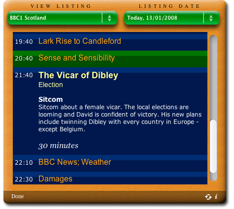

Find out what's on TV quickly and easily.
Compatible with Mac OS X 10.5 (Leopard) and 10.6 (Snow Leopard)!
Note: Due to recent changes to the Radio Times website, the data source for the widget is no longer available and the widget is sadly no longer functional. Thanks to everyone for your feedback and support through the years! I'm glad that you found it useful.
Interested? Why not download it and try it out!
Please note: The widget retrieves machine-readable data from the radiotimes.com site. All listing data is the copyright of the Radio Times website and this data is restricted to personal use only.
© 2005-2015 Daniel Phillips